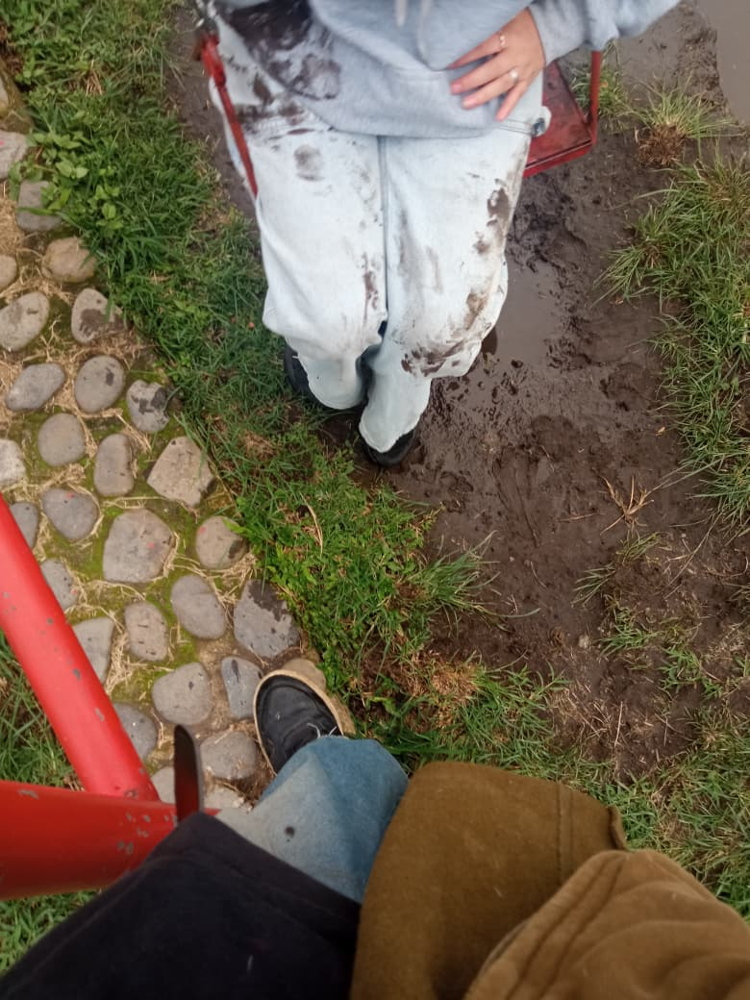
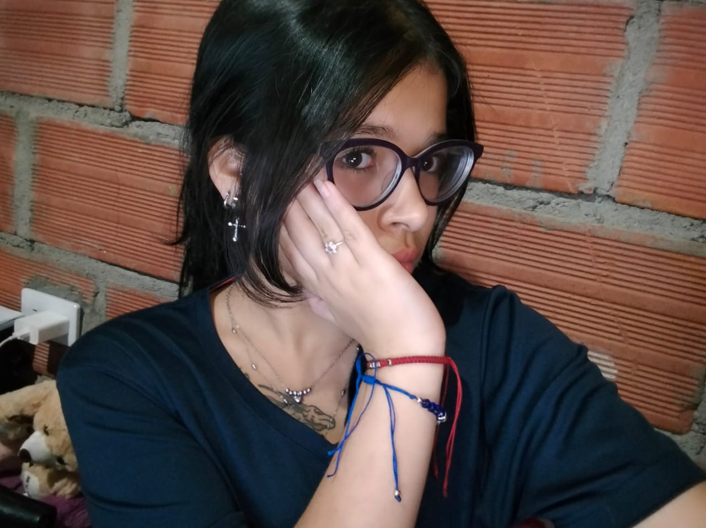
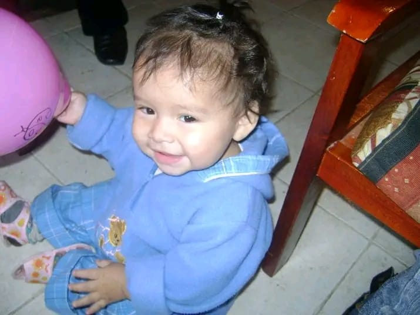

Buenos dias, tardes o noches mi amor
Quise hacerte un pequeño regalito que pues no es físico, pero igualmente significa demasiado. Esta página tiene bastantes cositas que hemos pasado juntos; es mi forma de decirte lo mucho que te amo de una manera diferente, siempre me ha encantado ser diferente a los demas y no muchos le han creado una pagina a su noviecita, aqui estoy yo para darte cositas diferentes.
la idea de esto es que siempre puedas tener mis palabras cerquita a ti, solo necesitas internet y entrar al link siempre que quieras para leer un poquito de mi inmenso amor por ti
hemos pasado por muchos momentos bonitos, pero el que mas importante considero, fue cuando tuve el valor de acercarme a ti y hablarte por primera vez, me puse demasiado nervioso, me temblaban las manos y al ver tus preciosos ojitos color cafe casi se me para el corazon, lo unico que pude decirte fue si me podias pasar tu numero para conocernos ya que me pareciste demasiado preciosa y con una energia bastante wonita, tenia tantas ganas de conocerte y le agradezco a el yo del 19/9/2025 que tuve el impulso de hablarte
muchas veces te he tomado foticos sin que te des cuenta, aunque tu digas que en esas fotos quedas mal, para mi siempre en cualquier foto te ves la niña mas guapa de todo el universo, me encanta cada expresion que haces, cada palabra que dices, me encanta la forma en la que me miras, me encanta la forma en la que caminas y amo cada minima parte de tu piel, siempre te ves tan preciosa y ese perfecto fisico que tienes combina excelente con tu preciosa y unica personalidad.
como olvidar cuando despues de 8 dias nos volvimos pareja, como olvidar ese dia en el que te lleve a el lugar secreto en el que nos sentamos en esa ramita del arbolito donde se me durmio la kola JJASDJASKLJALS, como olvidar que despues de estar un buen ratico ahi en ese lugar tan tranquilo empezo a llover y cuando nos toco irnos para no mojarnos en ese momento mientras estabas en frente de mi, te pedi que me permitieras ser tu noviecito, como olvidar que de los nervios que te dieron solo quisiste clavarte en mi pecho y decir ci con la cabecita, como olvidar que desde ese momento, senti por fin lo que es ser amado
hay un dia en el que la pasamos MUI MUI bien, nos reimos muchisimo y nos caimos junticos varias veces, fue ese dia en el que estabamos con el perrito por ciudad jardin, aveces sueño con ese dia, con tu hermosa risa cada que nos deslizabamos, me encanta esa sonrisita de felicidad que tenias cada que el perrito nos empujaba, me acuerdo que tambien lo atropellaste con el columpio y casi chillas, esos recuerdos son los que de verdad valen para mi, cada momento que paso contigo para mi es un dia en el que fui completamente feliz


uno de los momentos mas bonitos y especiales que hemos tenido juntos, fue el dia en el que te di el anillo de promesa, ese dia estaba tan nervioso porque para mi y yo creo que tambien para ti esas cosas son objetos que tienen un significado verdaderamente profundo y real, no son objetos de simples palabras, cuando te di el anillo de promesa de verdad me estaba comprometiendo a casarme contigo algun dia cambiandote el anillo de promesa por el de compromiso para despues darte tambien el de matrimonio, esos 2 anillos no se nos pueden perder, algun dia me casare contigo y todo lo que nos hemos prometido... se hara realidad

ojitos tan preciosos que tienes
aun recuerdo perfectamente que el mismo dia que te pedi el numero ese mismo dia nos vimos para charlar un rato en la media torta arriba de tu casita, nos sentamos en las gradas y ahi me empezaste a hablar y hablar, con tu vocesita tan preciosa que nunca sale de mi mente, YA TE DIJE QUE AMO DEMASIADO TU VOZ? quiero que sepas que amo como me cuentas tantas cosas cuando estamos junticos, soy bastante callado aveces porque no se que contarte de mi vida si ya sabes todo todo, pero amo sentir cada historia que me cuentas, amo que tengas esa comunicacion tan unica y bonita conmigo, quiero que sepas que TEAMOMUCHO
uno de los momentos a los que mas aprecio y mas sentimiento le tengo es al dia en el que apareci de la nada cuando ibas a ir a visitarme a san juan, me acuerdo perfectamente que te tenia un ramito de flores, me sente al lado de el supermercado que queda al lado de la estacion de la fuente atras de una planta para que no me vieras, espere hasta que apareciste y corri a abrazarte, casi lloras y yo casi tambien, se sintio tan bonito que despues de esos dias mirandote solo en fotos pensando que no te iba a poder ver en 3 meses te hubiera podido ver tan pronto, eso me hace sentir muy feliz mi princesa, aunque me hubiera quedado 3 meses me ibas a esperar
hay muchos momentos bonitos que me acuerdo y me dan ternura, risa y me hacen tener un sentimiento wonito, como cuando te desinflaste en el baño mientras le quitabas el jabon de la cara a uno de tus primos, como las veces que me has puesto a probarme tu ropa, la vez que me maquillaste y quede toda una diva AJJASKKASDJASLDJASDJ, las veces que casi me caigo y me vez con esos ojitos y esa sonrisita, las veces que he gritado que te amo y te da pena asi como cuando te cargo en frente de todos para que todos sepan que te amo, esos y muchos mas son momentos importantes para mi que recuerdo y me sacan una sonrisa, pero no una sonrisa tan bonita como la tuya

como haces para verte tan preciosa siempre?
uno de los momentos mas importantes que tengo en mi mente contigo fue esa noche en la que me permitiste saber por todo lo que pasaste a tan corta edad, es especial para mi porque desde eso entiendo muchas mas cositas sobre ti, entiendo por que no te gusta estar alrededor de tanta gente, entiendo por que aveces no quieres comer, entiendo tus subidones y bajones de animo, entiendo que no siempre te sientes bien y hay dias en los que tus pensamientos te hacen creer que no eres lo suficientemente bonita, cosa que es una falsa idea porque sin importar si estas despeinada, en pijama, sin maquillar, recien despertada y mil formas mas, Siempre pero Siempre te ves tan preciosa que me dan ganas de agarrarte a abrazos y besos para que en cada uno se refleje lo preciosa fisicamente y en personalidad tan perfecta que eres, Eres perfecta mi amor, nunca pienses que no te ves bonita porfa, porque tu cuerpo es la envidia de mil millones de mujeres y junto a esa personalidad tan unica, el deseo de billones de hombres, quedate conmigo y dejame sanar cada una de tus heridas

amo tanto a tu niña interior, yo se que has pasado por muchisimas cosas dificiles y por eso quiero seguir cuidandote y amandote a ti y a tu aun mas pequeñita niña interior, dejame seguir sacandote sonrisas hasta que la muerte nos alcance, aunque estoy seguro de que despues de esta vida si hay otra, te buscaria para seguir amandote
un momento muy especial para mi fue cuando te di las rosas eternas, me habia trasnochado terminandolas la noche antes de dartelas, no sabia si te iban a gustar y ademas tenia muchos nervios porque con solo verte mi estomago se revuelve, creo que a eso lo llaman sentir mariposas en el estomago, aun las siento y estoy seguro de que las seguire sintiendo hasta el fin de los tiempos, en fin, ese momento es muy especial para mi ya que me recuerda a mi cuando apenas estabamos empezando nuestra relacion
mi princesa, como siempre te digo, quiero que sepas que te amo con toda mi alma y que eres mi futuro y presente, eres lo que pienso al despertar y al acostarme, eres la mujer que amo y amare por el resto de mis dias, quiero que sepas que solo quiero seguir haciendote feliz por el resto del tiempo que nos quede en esta vida para tambien buscarte en las proximas, amor enserio te amo tanto que no hay una forma de expresarte lo tanto tanto tanto que siento con solo tenerte cerquita a mi mirandome con esos ojitos cafes que tanto amo, porfa que nuestra relacion sea eterna, amemonos, cuidemonos y siempre respetemonos, hagamos de todo pero siempre con amor, discutamos pero para construir una relacion cada vez mas bonita, entendamonos siempre y siempre hablemonos con amor, espero que lo nuestro sea eterno, TE AMOOOOOOOOOOOOOOOOOOOOOO